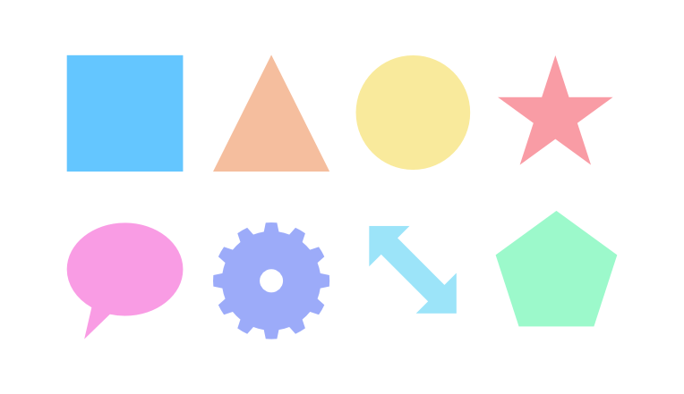

Most geometric shapes, such as squares, circles and polygons, are difficult to draw accurately freehand. We've provided a selection of useful shapes to help you solve this problem. The shapes are fully geometrically correct, customizable, and can even be converted to curves for additional editing.

Shapes are easy to modify by changing the properties on the context toolbar or by dragging the special red handles. When hovered over, the direction in which they can be dragged is indicated by the pointer and/or a horizontal line.